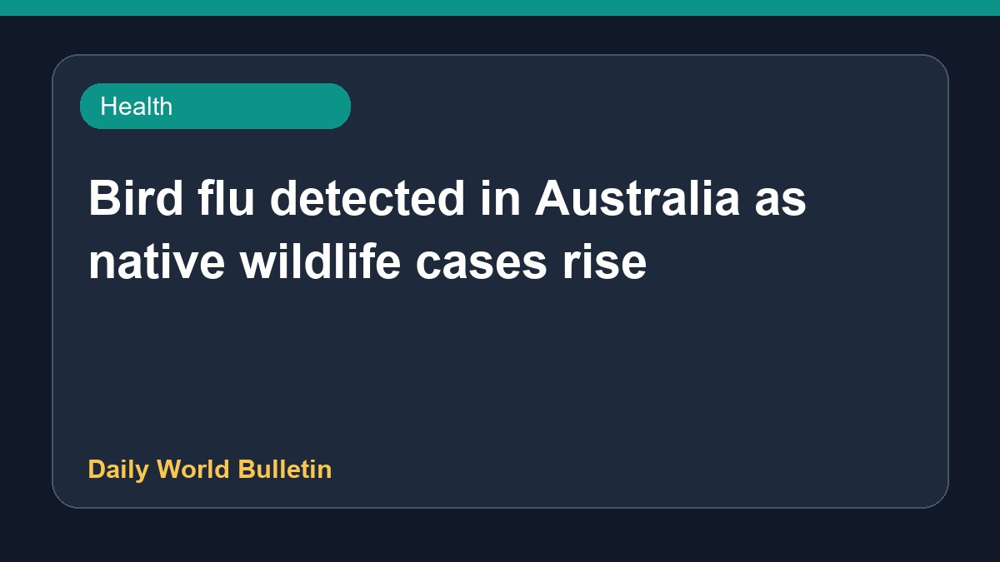

Bird flu detected in Australia as native wildlife cases rise

Bird flu has arrived in Australia, leading to wildlife sightings of affected animals like a trembling tern. Authorities are planning to roll out avian influenza vaccines to protect vulnerable native bird species. Meanwhile, the number of bird flu detections in wild birds has doubled in less than four days, raising environmental concerns and prompting discussions about emotional impacts and housing requirements.
Original source: Health News Sources
Jean hoped bird flu wouldn’t come to Australia. Then it arrived – and she saw a tern ‘trembling and swaying’ - The Guardian ↗
Jean hoped bird flu wouldn’t come to Australia. Then it arrived – and she saw a tern ‘trembling and swaying’ - The Guardian ↗